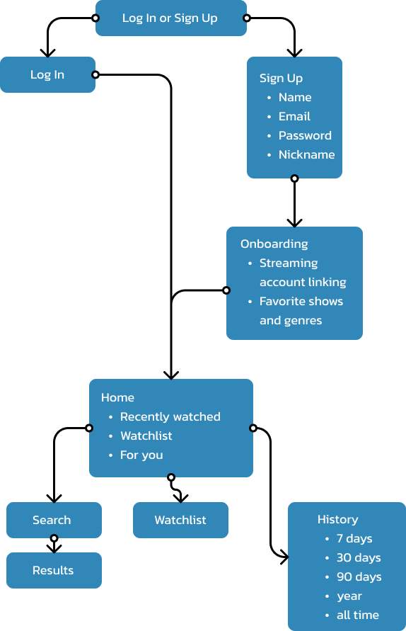

Hi! I'm Emma.

I'm a designer and developer with interests in content strategy, web development, UX/UI design, product design, and user research. I'm passionate about education access and equity, supporting individuals in LGBTQ+ community, and solving
problems with inclusive digital solutions. I practice human-centered design and prioritize accessibility in all of my work. I am looking to broaden my horizons as a designer and developer while working for an organization whose mission
aligns with mine.
In my free time, I love to bike, longboard, hike, crochet, and play guitar.
Current Work: Graphic Design & Web Development @ Education Policy Initiative
Stream On: Product Design
Role: Student, Product Designer
Methods: Personas, User Flow Diagram, Wireframes, Usability Testing
Tools: Figma, Pivotal Tracker
Duration: Fall 2021
View Prototype Here
Summary
I developed a concept and prototype for a web application that consolidates the media libraries of all users’ streaming services in one searchable place. This product combines the libraries of all streaming services a consumer chooses to include and creates a one-stop destination for users to search and browse for content, manage a watch list, and analyze watching habits.
Problem Statement
Consumers need an easy way to search through all their streaming platforms at once for a tv show or movie to watch because many people have multiple video streaming service subscriptions with separate apps and media libraries that can be time consuming to navigate.
Audience and Personas
StreamOn is targeted towards consumers who have multiple active streaming service subscriptions. StreamOn can improve the video streaming experience by shortening the time it takes to find a show to watch, quickly determine if a show or movie is available for streaming without any extra cost, and helps users understand and reflect on their overall streaming habits to create a healthier relationship with TV and movie streaming.
Design Process
User Flow -> Wireframes -> Initial Prototype -> User Testing -> Final Prototype
View Stream On's user flow, initial wireframe, and final mockup below.The initial user flow failed to include a menu for users to manage their accounts after completing the onboarding. After speaking with instructors, I recieved feedback that I should create a page for editing a user's profile as well as a button to log out of the application. These were incorporated into the final prototype. Another change I implemented after creating this user flow was to decrease the number of time frames for the watch history analytics. It was more reasonable for me to devote time to including some of the features I was missing like the profile settings and logout functionality, so I only provided analytics for the week, month, 6 months, year, and all time, when I originally wanted to include 90 days as well.
Rationale
This product was influenced heavily by existing streaming platforms as well as last.fm, a website that combines all of a user's music streaming accounts into one platform and provides insights about listening habits. Stream On was the best solution
to users' problem of managing multiple platform libraries and watchlists because it seamlessly connects to users' intended shows on each app and allows users to create a single watchlist for all platforms. But, in addition to this, it provides
an extra feature of watch history and analytics for all apps like last.fm does for music, creating an extra addition of value in a personalized app.
The design of the user interface was inspired by existing streaming apps like Netflix,
Hulu, and HBO Max, but I differentiated the design by using a lighter color scheme with white as the base rather than gray or black as most streaming apps do. I created a unique and consistent brand for the product with a color scheme consisting
of two shades of blue and white, creating a logo, and using visual elements like wavy lines to guide a user's eye down the homepage. With all of these elements I created a recognizable brand that has functional elements and layout that reflects
existing streaming apps, but with a visual design that sets it apart.
Proposed Changes and User Feedback
- Make the watch history more detailed to create more useful insights for users.
Users expressed satisfaction with the contents of the watch history analytics, but one mentioned that it would be helpful to color code the daily watch time bar chart to visualize which apps were used most on any single day. They thought it would be a more helpful representation of the data. - Add ratings from an outside source to each show and movie page.
I recieved feedback from user testing that adding ratings, like they appear on Netflix, would be useful to add to this app as well. This is an important feature that some users utilize in existing streaming apps, so this is something I would like to include in future updates of this prototype. - Open a new tab to show a streaming app being opened.
While sharing my initial prototype with instructors, I recieved feedback that would improve the logical flow of my product. It was recommended that I add a pop-up that appears when a user clicks the button to watch a show in any streaming app to more clearly demonstrate the results of that action. I implemented that change in the final prototype. - Decrease the size of components to make it clear that the page is scrollable.
Another essential change I made as a result of user feedback was decreasing the size of main components to make it clear that there was more content to be scrolled through on each page. In my initial prototype, each show card was large enough that it filled the body of the page. There was no signifier that there was more content below the frame. To remedy this, I decreased the size of each card to display part of the content below it to signal to the user that they can scroll down the page.
Next Steps
- Refine the visual design of the app to make the onboarding more visually exciting. While the current design is simple and pleasing with blue accents and interactive components, but it could be a lot more exciting to welcome users more effectively.
- Add ratings to individual show overlays to provide users with extra information about general opinions of a show before planning to watch it.
- Create more detailed watch history insights with color-coded visuals that will help users more clearly understand their watching habits.
- Icebox: Add social features to allow users to create public profiles to recommend and review shows for their friends.
- Icebox: Add achievement badges for streaming milestones to incentivize app use. Ex. "100 hours", "Rom-Com Fanatic", "Harry Potter Expert", etc.